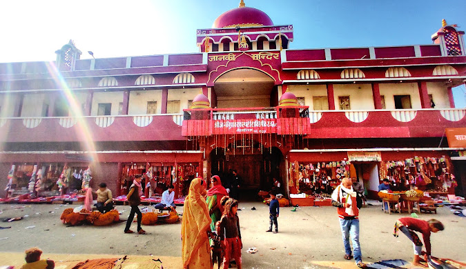
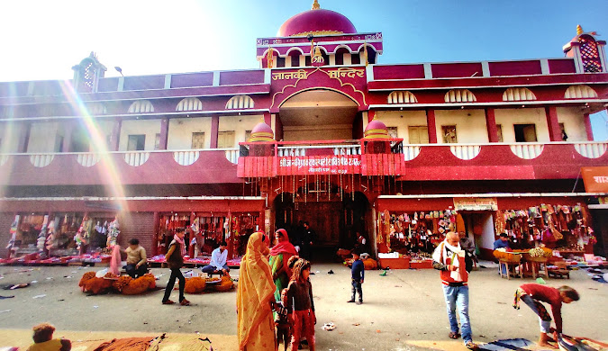
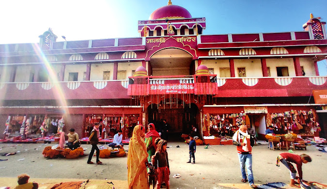

Gallery

 

Janaki Temple birthplace of Goddess Sita
The Janaki Temple in Sitamarhi, Bihar, is a famous Hindu temple believed to be the birthplace of Goddess Sita, and a significant pilgrimage site for Hindus, particularly those associated with the Ramayana.

The temple is believed to be the location where King Janak found Sita in an earthen pot while ploughing the field.
Sita Kund, or Janaki Kund, is an important feature of the temple complex, believed to be the spot where Sita was found.